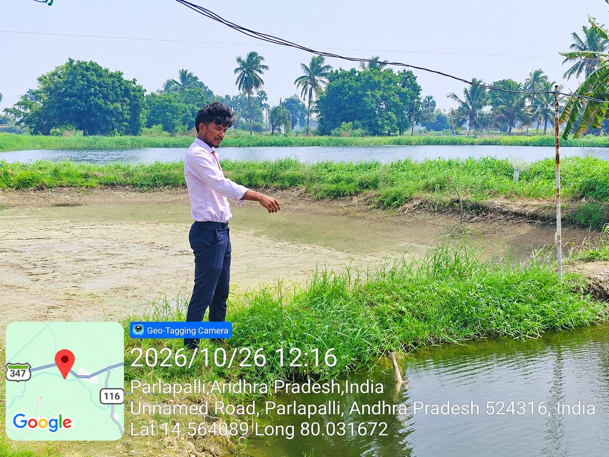
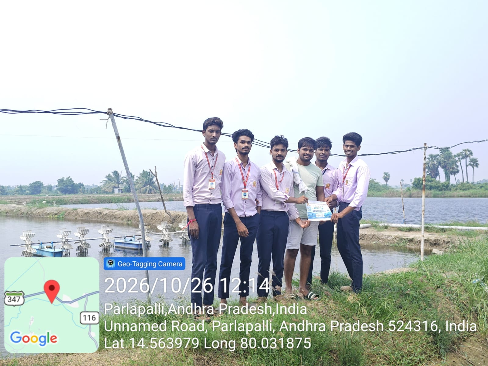
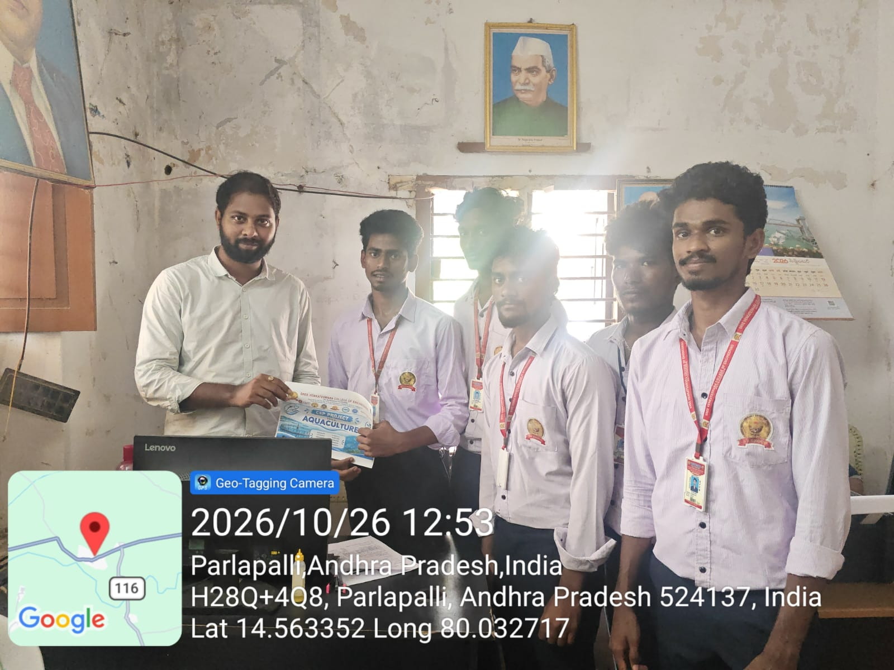
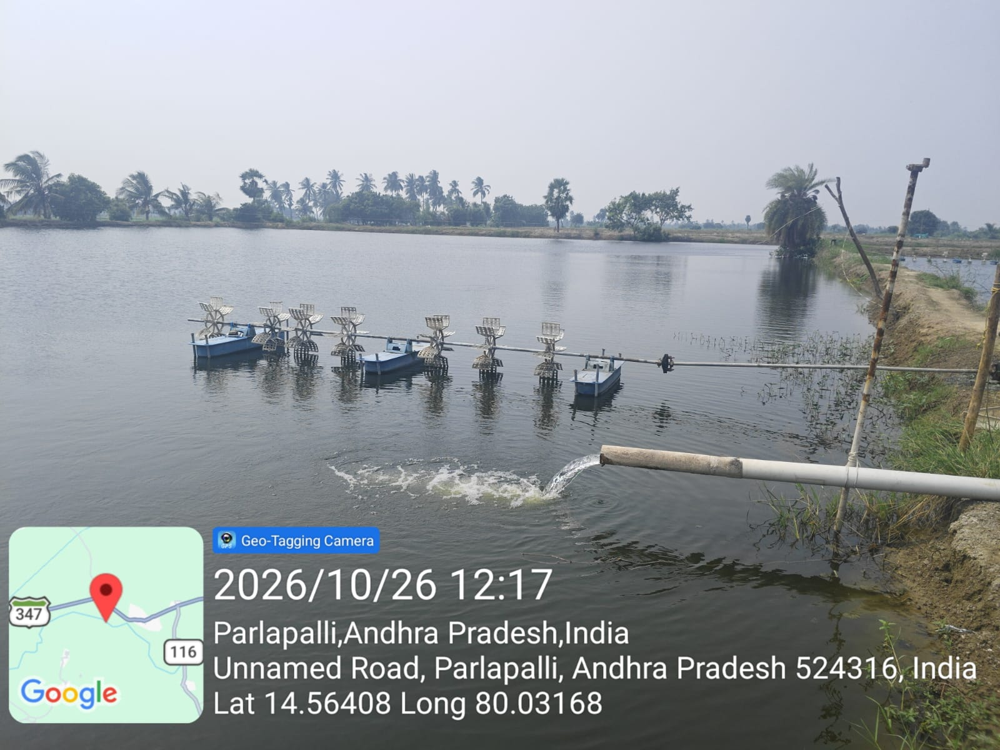
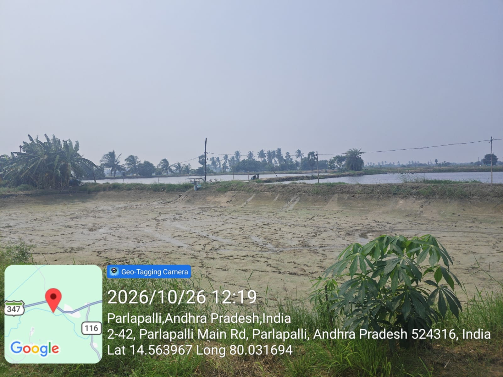

Introduction
Shrimp farming is a major part of brackish-water aquaculture in India. Suitable coastal conditions and farmer experience have helped the sector grow.
A field-based study of shrimp aquaculture, pond practices, farm equipment and the role of sustainable methods in supporting local aqua farmers.
Aquaculture is an important livelihood and economic activity in coastal Andhra Pradesh. This Community Service Project focuses on shrimp farming practices, pond management, farm equipment and the challenges faced by aqua farmers. The field visits helped us observe shrimp ponds and understand how responsible farming practices can support productivity while protecting water resources.
Shrimp farming is a major part of brackish-water aquaculture in India. Suitable coastal conditions and farmer experience have helped the sector grow.
Pond preparation, good-quality seed, suitable feed and regular water-quality monitoring are important parts of shrimp cultivation.
Disease outbreaks, water-quality changes, operating costs and market conditions can affect shrimp production and farmer income.
Responsible feed use, waste management, biosecurity and careful water management can help reduce environmental impact.
Field observations and learning activities carried out for the project at Parlapalli, Andhra Pradesh.
| S.No | Week | Location | Activity / Learning |
|---|---|---|---|
| 1 | Week 1 | Parlapalli | Selected the topic, started background research and identified common issues related to shrimp farming. |
| 2 | Week 2 | Parlapalli | Visited shrimp-farming ponds and observed the pond environment and basic farm setup. |
| 3 | Week 3 | Parlapalli | Interacted during the field visit and learned about pond preparation and shrimp seed selection. |
| 4 | Week 4 | Parlapalli | Studied the importance of feed selection, water treatment and maintaining suitable pond conditions. |
| 5 | Week 5 | Parlapalli | Observed pond equipment and aerators and learned how they support oxygen circulation in water. |
| 6 | Week 6 | Parlapalli | Reviewed field observations, discussed farming challenges and prepared the project documentation. |
Photographs from the field visit and project activities.





This mini project documents the Community Service Project work on Aqua Culture in Shrimp Farming. It brings together field observations and learning about pond management, aeration, water quality, feed, disease prevention and sustainable aquaculture. The project is presented by Poluru Lakshman, CSE-AI.
POLURU LAKSHMAN
24JNA31082
CSE-AI
Aqua Culture in Shrimp Farming